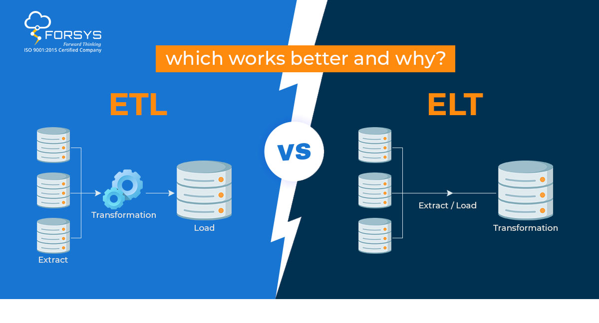
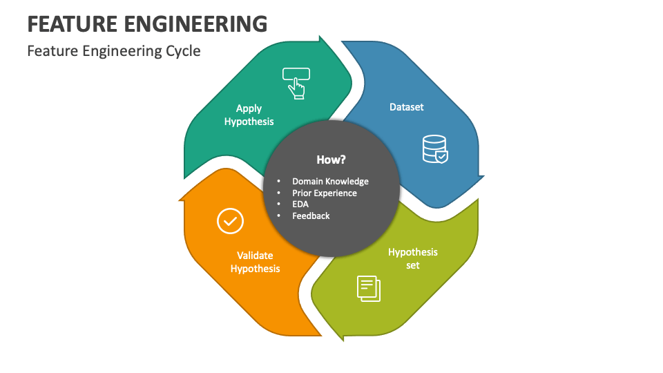

Grupo 2️⃣ Limpieza & Transformación
Descripción: Mucho antes de que existieran las computadoras modernas, filósofos y matemáticos ya se preguntaban si el pensamiento podía describirse mediante reglas lógicas. Estas ideas sentaron las bases de lo que hoy conocemos como Inteligencia Artificial.

Aristóteles y la lógica formal
Aristóteles fue uno de los primeros en intentar sistematizar el razonamiento humano mediante reglas lógicas. Sus ideas inspiraron siglos después el concepto de razonamiento computacional.
Manejo de valores nulos y outliers
Proceso fundamental de preparar datos crudos para su análisis, garantizando precisión, consistencia y calidad.

ETL/ELT y pipelines
ETL (Extraer, Transformar, Cargar) ELT (Extraer, Cargar, Transformar)

Feature Engineering
Feature Engineering es el proceso de seleccionar, crear y transformar variables (features) a partir de los datos originales para mejorar el rendimiento de los modelos de machine learning. Consiste en preparar los datos de forma que los algoritmos puedan entender mejor la información y detectar patrones. Incluye técnicas como crear nuevas variables, transformar valores, normalizar datos o codificar variables categóricas. Una buena ingeniería de características puede mejorar significativamente la precisión y eficacia de los modelos predictivos.
W. Edwards Deming “Without data, you’re just another person with an opinion.” (Sin datos, solo eres otra persona con una opinión.)